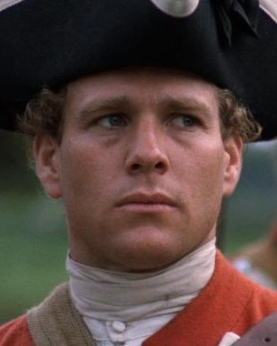

Barry Lindon
Barry Lyndon es una película angloamericana dramática-histórica de 1975 escrita y dirigida por Stanley Kubrick; y protagonizada por Ryan O'Neal, Marisa Berenson, Patrick Magee y Hardy Krüger. Está basada en la novela La suerte de Barry Lyndon de William Makepeace Thackeray, publicada en 1844. La cinta describe las aventuras ficticias de un personaje irlandés durante el siglo XVIII, y está ambientado en parte durante la Guerra de los Siete Años. También es prácticamente un documental de cómo vivía la gente en Irlanda e Inglaterra de ese período: sus modales y moral, sus valores y amores, sus duelos personales y batallas a gran escala. Los exteriores fueron rodados en diversas localizaciones de Irlanda, Inglaterra y Alemania. El cineasta Martin Scorsese citó a Barry Lyndon como la mejor película dentro de su género y su película favorita del director, sirviendo de inspiración para su famoso film La edad de la inocencia.
La película ganó cuatro premios Óscar a la Mejor Dirección Artística, Mejor Fotografía, Mejor Vestuario y Mejor Banda Sonora, y fue nominada también a Mejor Película, Mejor Director y Mejor Guion Adaptado. Además Kubrick ganó el premio de la Academia Británica de Cine y Televisión (BAFTA) a la Mejor Dirección y John Alcott ganó el de Mejor Fotografía, y la cinta fue nominado a Mejor Película, Mejor Dirección Artística y Mejor Vestuario. En numerosas encuestas, entre ellas del Village Voice (1999), Sight & Sound (2002), Time (2005) y la BBC, se la ha considerado una de las mejores películas jamás rodada
El reparto de la película es uno de los puntos en los que algunos aficionados y críticos coinciden en señalar como no ser el más idóneo. Lo cierto es que la elección de O'Neal para interpretar al protagonista puede no gustar a algunos, principalmente por la escasa expresividad del actor, el director buscaba un actor no excesivamente carismático que pasara bien por lo que el personaje es, un vividor con escasas virtudes morales. Del resto del reparto destaca el trabajo de Berenson, que da vida a Lady Lyndon, la condesa a la que Barry seduce y de la que obtiene su noble apellido. El resto realiza una buena labor. A pesar de las críticas, es la película por la que se considera el mejor trabajo de ambos protagonistas.
El afamado director de cine Martin Scorsese ha citado a Barry Lyndon como su película favorita de Stanley Kubrick. Algunas citas del guion de esta película han aparecido en otras obras cinematográficas tan dispares como Los duelistas de Ridley Scott, La edad de la inocencia del propio Scorsese, Rushmore de Wes Anderson y Dogville de Lars von Trier.
1968